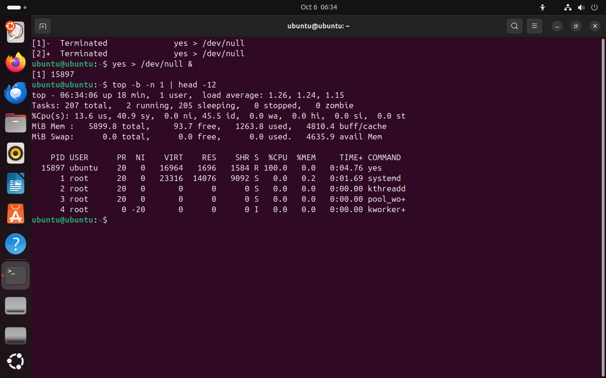
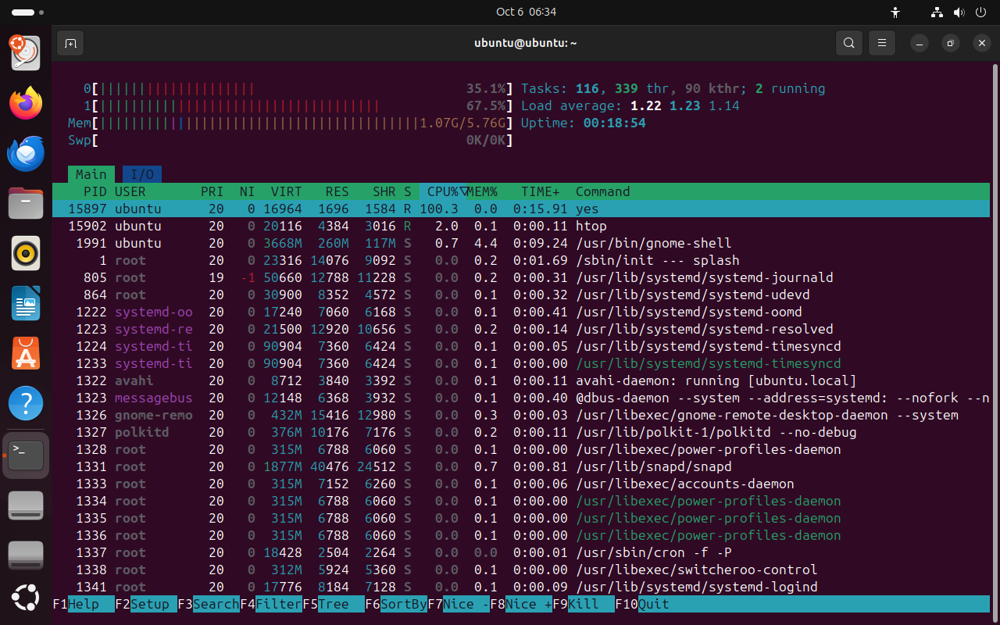

Часть 2 из 7
Мониторы процессов: top и htop
В этой части разберём, как читать шапку и таблицу программы top, какие клавиши в ней нужны и чем удобнее htop.
2.1 Программа top
top — монитор процессов. Он раз в три секунды обновляет экран: сверху сводка по системе, ниже таблица процессов, отсортированная по загрузке процессора. Самый загруженный процесс оказывается в первой строке.
top похож на табло диспетчера в аэропорту. Сверху общая обстановка: сколько рейсов в воздухе и сколько ждут. Ниже список рейсов, и он сам обновляется, пока на него смотрят.
Шапка top состоит из пяти строк.
| Строка | Что показывает |
|---|---|
top - 06:30:01 up …, load average | то же, что uptime |
Tasks: … running, … sleeping, … stopped, … zombie | сколько процессов в каждом состоянии |
%Cpu(s): us, sy, ni, id, wa | на что тратится процессор: us — программы пользователей, sy — ядро, ni — процессы с пониженным приоритетом, id — простой, wa — ожидание диска |
MiB Mem, MiB Swap | память и раздел подкачки: всего, свободно, занято, кеш, доступно |
В таблице процессов главные столбцы такие.
| Столбец | Что значит |
|---|---|
PID, USER | номер процесса и владелец |
PR, NI | приоритет планировщика и поправка nice |
RES | сколько оперативной памяти процесс занимает сейчас |
S | состояние: R, S, D, T, Z |
%CPU | доля одного ядра за последний интервал обновления; 100 — одно ядро целиком |
%MEM | доля от всей оперативной памяти |
TIME+ | сколько процессорного времени процесс потратил за всю жизнь |
COMMAND | имя программы |
%CPU в top считается за последние три секунды, поэтому видно, кто занят прямо сейчас. В ps этот столбец — среднее за всю жизнь процесса, мы видели это на прошлом занятии.
2.2 Клавиши top
top управляется одиночными клавишами. Самые нужные собраны в таблице.
| Клавиша | Действие |
|---|---|
| P | сортировать по процессору (так top начинает) |
| M | сортировать по памяти |
| 1 | показать загрузку каждого ядра отдельно |
| k | послать сигнал: top спросит PID и номер сигнала, по умолчанию 15 — TERM |
| r | изменить nice процесса |
| q | выйти |
Для снимка и для скриптов top запускают в пакетном режиме: ключ -b печатает таблицу как обычный текст, -n 1 — один раз, без обновления. Вывод можно обрезать командой head.
yes > /dev/null &# процесс, занимающий ядрочто делает
Что делает команда. Запускает в фоне процесс yes, который занимает целое ядро.
По частям:
yes- бесконечно печатать строку y
>- записать вывод в файл
/dev/null- устройство, которое выбрасывает всё записанное
&- запустить команду слева в фоне и сразу продолжить
top -b -n 1 | head -12# шапка и первые строки таблицычто делает
Что делает команда. Печатает один снимок экрана top как текст и оставляет шапку и первые строки таблицы.
По частям:
top- монитор процессов
-b- пакетный режим: печатать таблицу как обычный текст
-n 1- сколько раз обновить: 1
|- передать вывод левой команды на вход следующей
head- оставить только первые строки
-12- сколько первых строк оставить: 12
- 1нагрузка — как в uptime
- 22 процесса выполняются
- 3us — код программ
- 4sy — работа ядра: yes просит записать строку
- 5id — простой
- 6доступная память
- 7R и 100 %: yes занимает ядро целиком


Весь снимок ↗Шапка top и самые загруженные процессы.
Что показывает снимок. top показал ту же нагрузку, что и uptime, и 2 выполняющихся процесса. Процессор тратит 40,9 % на ядро (sy) и 13,6 % на программы (us): yes всё время просит ядро записать строку. Первая строка таблицы — yes в состоянии R со 100 %.
Где это пригодится. Шапка top за секунду отвечает, чего не хватает: высокий us — считают программы, высокий sy — много работы ядра, высокий wa — медленный диск.
2.3 Программа htop
htop делает то же, что top, но нагляднее. Загрузка каждого ядра и память показаны цветными полосами, таблицу можно листать стрелками и выбирать процесс курсором. Внизу экрана подписаны функциональные клавиши.
| Клавиша | Действие |
|---|---|
| F3 | найти процесс по имени |
| F4 | фильтр: оставить только процессы с этим словом |
| F5 | показать дерево процессов |
| F6 | выбрать столбец для сортировки |
| F7, F8 | уменьшить и увеличить nice выбранного процесса |
| F9 | послать сигнал выбранному процессу |
| F10 или q | выйти |
Цвета полос процессора означают то же, что поля шапки top: зелёный — программы пользователей, красный — ядро, синий — процессы с пониженным приоритетом.
htop# выход — qчто делает
Что делает команда. Открывает интерактивный монитор процессов htop; выход — клавиша q.
По частям:
htop- интерактивный монитор процессов
- 1полосы ядер 0 и 1: красное — время ядра
- 2память: 1,07 из 5,76 ГБ
- 3нагрузка за 1, 5 и 15 минут
- 4столбец сортировки CPU%
- 5yes наверху списка
- 6подсказка по функциональным клавишам


Весь снимок ↗Полосы загрузки ядер и памяти, таблица процессов htop.
Что показывает снимок. В htop yes показан первой строкой со 100 % в столбце CPU%. Загрузка распределена по двум полосам ядер, потому что планировщик переносит процесс с ядра на ядро. Красная часть полос — время ядра.
Где это пригодится. В htop процесс выбирают стрелками и сразу посылают сигнал F9 или меняют nice F7 и F8, не переписывая PID вручную.
После опыта завершите фоновый процесс: kill %1.
Итоги части 2
- top показывает сводку системы и таблицу процессов, обновляя её каждые три секунды.
- Шапка: нагрузка, процессы по состояниям,
us,sy,ni,id,wa, память. - Клавиши top: P и M — сортировка, k — сигнал, r — nice, q — выход.
top -b -n 1печатает один снимок таблицы как текст.- htop: полосы ядер и памяти, поиск F3, дерево F5, сигнал F9.
В отчётСнимок top и снимок htop: подпишите нагрузку, долю us и самый загруженный процесс.